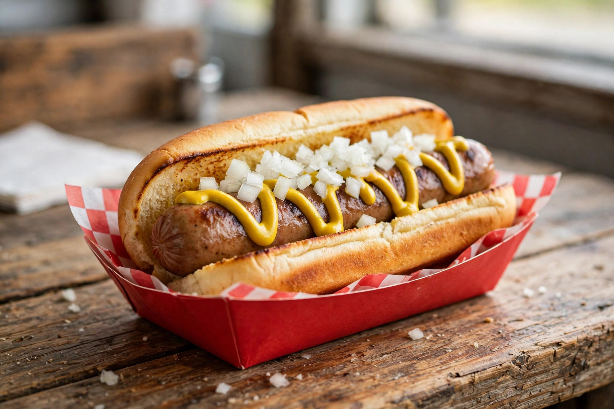
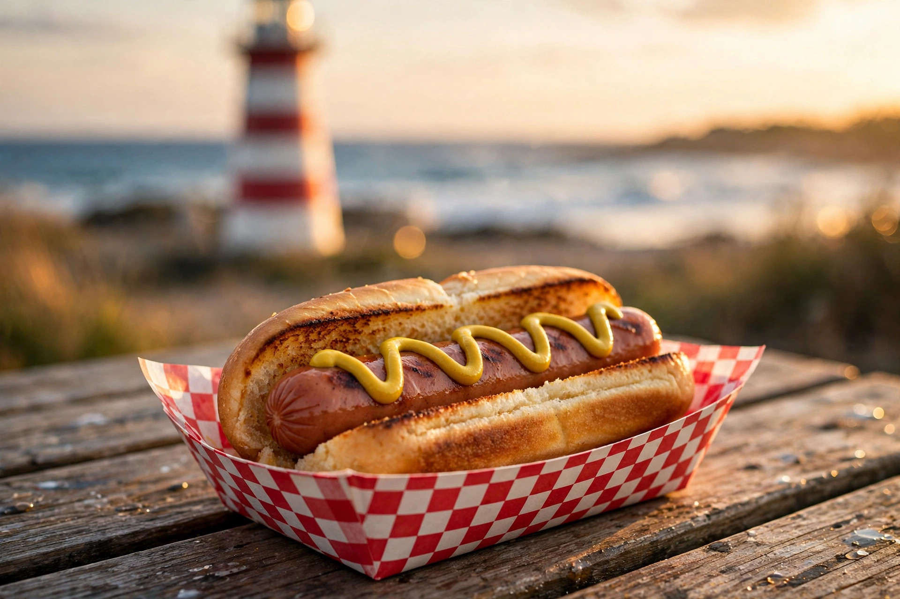
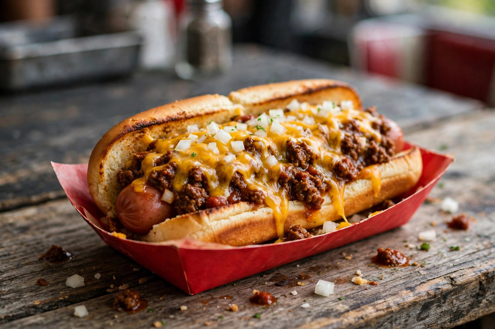
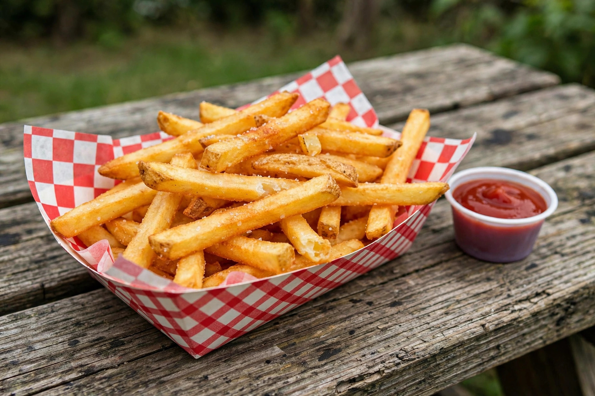

Sample menu
The Lighthouse Classic
All-beef dog, toasted split-top bun, mustard zigzag, diced onion. The one that started it.
Lubec, Maine · Est. 2024
A little red hot-dog stand in the easternmost town in the United States — a short drive from the candy-striped West Quoddy Head Light. Simple food, done right, at the edge of the map.
Sample hours: Mon 11–2 · Thu–Sun 11–5:30. Always confirm on Facebook — this page is a concept demo, not the official site.

Opened its doors in Lubec, Maine.
News coverage, 2025News features — B985 and WJBQ, calling it the easternmost hot-dog spot in the U.S.
B985 / WJBQ, June 2025Maine restaurant health inspection, October 2025.
State inspection recordFrom downtown Lubec to West Quoddy Head Light, down Route 189.
Local travel guidesThe board
The real menu lives on their Facebook page. Until then, here's what a Dog House menu ought to look like.

All-beef dog, toasted split-top bun, mustard zigzag, diced onion. The one that started it.

Loaded with chili and melted cheddar. Napkins strongly advised.

Crispy, salted, gone in minutes. The correct co-pilot for any dog.

The signature
Nobody drives to the easternmost town in America for one hot dog. They drive for the sunrise at West Quoddy Head, the coastal trails, the working waterfront — and the hot dog is the reward. Build the day around it.
Rolling soon
The Dog House announced it will stay open at 6 School St until the building sells — then the dogs hit the road in a food truck. This site is built to move with it: no fixed address, just follow the smell of mustard.

Come find the little red stand in Lubec — or catch the truck wherever it rolls next. Either way, the mustard zigzag is waiting.